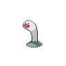

📖 英語版の図鑑説明
This Pokémon can pick up the scent of a Veluza just over 65 feet away and will hide itself in the sand.
日本語訳
約20メートル先のミガルーサの匂いを嗅ぎ取り、砂の中に隠れてしまう。
📝 この図鑑文に出てくる英単語
| 英単語 | 意味 | 品詞 | レベル |
|---|---|---|---|
| pick | つまむ | 動詞 | 中2 |
| scent | におい | 名詞 | 大学 |
| hide | 隠れる、隠す | 動詞 | 中2 |
| sand | 砂 | 名詞 | 中2 |
文法ポイント can pick は「can + 動詞の原形」で「〜することができる」と能力を表します。
💡 英語名「Wiglett」の由来
英語名「Wiglett」は、wiggle（くねくね動く）、water（水）、white（白）とDiglett（ディグダ）を組み合わせた名前と考えられている。フランス語の名前は「Taupikeau」で、Taupiqueur（ディグダ）、eau（水）から作られている。
出典 Bulbapedia
✨ ウミディグダの豆知識
ウミディグダの発表によって、見た目は似ているけれど関係のない別種という「他人のそら似」のポケモンという考え方が初めて登場した。
出典 Bulbapedia
📊 ウミディグダの種族値
HP10
こうげき55
ぼうぎょ25
とくこう35
とくぼう25
すばやさ95
合計 245
❓ よくある質問
- ウミディグダの英語名は？
- ウミディグダの英語名は「Wiglett」です。
- ウミディグダの英語名「Wiglett」の由来は？
- 英語名「Wiglett」は、wiggle（くねくね動く）、water（水）、white（白）とDiglett（ディグダ）を組み合わせた名前と考えられている。フランス語の名前は「Taupikeau」で、Taupiqueur（ディグダ）、eau（水）から作られている。
- ウミディグダは英語版の図鑑でどう説明されている？
- 「This Pokémon can pick up the scent of a Veluza just over 65 feet away and will hide itself in the sand.」と書かれています。日本語にすると「約20メートル先のミガルーサの匂いを嗅ぎ取り、砂の中に隠れてしまう。」という意味です。
ウミディグダは第9世代（パルデア地方）のポケモンです。第9世代（パルデア地方）の英語名一覧 →